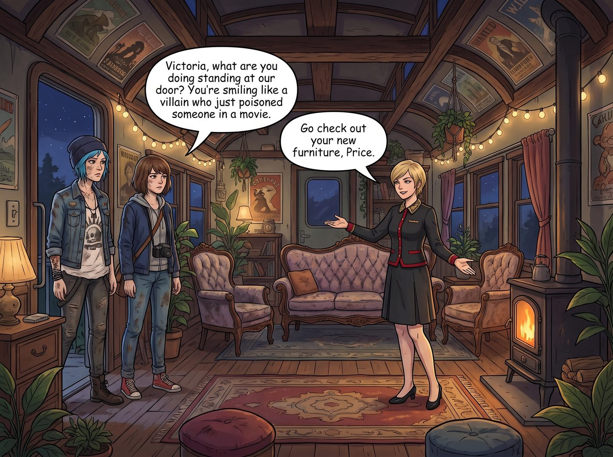

資產錯位配置實驗

在經歷了尖叫雞陣列的奇恥大辱後，作為 Chase 財團的繼承人，Victoria 絕對不可能嚥下這口氣。她決定用資本的力量，對那兩個品味低下的大頭蝦進行一場精準的物理降維打擊。
「既然她們喜歡無用之物，那我就讓她們見識一下什麼叫真正的工業垃圾。」Victoria 坐在防塵衣櫃前，冷笑著撥通了私人採購助理的電話。
一、資本家的垃圾部署
她下達了一個極度惡劣的指令：買空西雅圖周邊三個瀕臨破產的二手回收站，專門挑選那些過期的化學廢料和生鏽的電子垃圾，並要求在 Chloe 和 Max 出門巡邏時，將這些垃圾全部塞進她們的臥室，直到連床都看不見為止。
幾個小時後，一架重型貨運無人機將幾個巨大的木板箱精準地空投到了車廂外，隨貨附帶的，還有一台造型類似倉儲物流中心常見的小型搬運機器人——那種只會沿著地面規劃路徑移動、專門用來搬運貨箱的自動導引車，被 Victoria 額外付費租來，用於將這些箱子搬進 Chloe 和 Max 那個原本就亂糟糟的房間。
Victoria 雙手抱胸，站在走廊裡，想像著那兩個傢伙回來後，看到滿屋子生鏽破銅爛鐵時崩潰的表情，嘴角終於揚起了復仇的快意。
傍晚，帶著一身泥土味的 Chloe 和 Max 終於回到了車廂。
「Victoria，妳站在我們房門口幹嘛？笑得像個剛在電影裡下完毒的反派。」Chloe 警惕地看著她。
「去看看妳們的新傢俱吧，Price。」Victoria 高傲地撩了一下頭髮，退到一旁，做了一個請的手勢，「我為妳們的貧民窟美學添磚加瓦了。不用謝，畢竟處理那些廢物，我也是花了點運費的。」
二、化學廢料與真空管
Chloe 狐疑地推開門，Max 緊隨其後。
房間裡，堆滿了落滿灰塵的紙箱。Chloe 皺著眉頭，粗暴地扯開了第一個箱子。裡面裝滿了幾十個佈滿灰塵、看起來像是從上世紀六十年代拆下來的玻璃真空管和老舊的電吉他擴大機電路板。
Max 則打開了旁邊的一個恆溫防潮箱，裡面密密麻麻地碼放著幾百盒包裝已經泛黃、標註著早已過期的寶麗來底片。
Victoria 靠在門框上，準備欣賞她們的怒火：「看到了嗎？過期的化學顯影劑和早就被時代淘汰的真空管。這就是妳們的品味具象化。我把它們全買下來了，現在妳們的房間就是一個名副其實的垃圾掩埋——」
三、狂喜的倒抽冷氣
「老天啊！！！」一聲尖銳的驚呼打斷了 Victoria 的冷嘲熱諷。但那不是憤怒的尖叫，而是極度狂喜的倒抽冷氣聲。
Max 顫抖著雙手，捧起一盒過期的底片，眼睛裡閃爍著宛如見到聖杯般的淚光。「Victoria……妳知道這些底片現在在市面上有多難找嗎？！」Max 激動地抬起頭，「過期二十年的底片，它的化學藥劑會產生一種無法預測的、絕美的偏色效果！這是用多少數位濾鏡都模擬不出來的藝術瑕疵！妳居然……妳居然給我買了一整箱？！」
另一邊，Chloe 已經完全陷入了瘋狂。她小心翼翼地捧起一個沾滿灰塵的真空管，彷彿捧著一顆鑽石。「這是英國原廠的中古貨？！」Chloe 激動得連聲音都劈叉了，「這玩意兒能讓我的破吉他音箱發出最正宗的七十年代英倫搖滾失真音色！我找了兩年都買不到！Chase，妳簡直是個天才！」
Victoria 呆住了。她精心策劃的工業垃圾物理打擊，在文青攝影師和街頭搖滾太妹的眼裡，竟然變成了價值連城的稀世珍寶。
「等……等等！這是垃圾！」Victoria 慌亂地試圖解釋，「這是用來羞辱妳們的！我花錢是為了讓妳們無地自容，不是為了讓妳們搞藝術創作的！」
四、大型犬的擁抱
但那兩個大頭蝦根本聽不進去。在極度的狂喜中，Chloe 和 Max 展現出了前所未有的默契。她們一左一右，像兩隻熱情過度的大型犬，直接撲向了還站在門口的 Victoria。
「謝謝妳！Victoria！！」兩人不顧身上還帶著泥巴，死死地抱住了穿著真絲睡袍的老錢名媛。
「放開我！妳們這兩個髒東西！我的絲綢！我的肋骨要斷了！」Victoria 拼命掙扎，臉漲得通紅。但在她那尖銳的抗議聲中，卻隱藏著一絲連她自己都不願意承認的、被真誠感謝後產生的慌亂與不知所措。
五、失敗的報復，成功的投資
工作台前，實習生 Lily 將這場報復行動的監控畫面盡收眼底。她推了推反光的圓框眼鏡，手指在平板上飛速記錄。
「資產錯位配置實驗報告。投資人：Victoria Chase。投資標的：低流動性過期工業產品，帳面價值極低。情緒收益回報率：突破百分之一萬。結論：Victoria 學姐試圖進行惡意傾銷，卻意外觸發了高維度情感對沖機制。這是一次極其失敗的報復，但卻是一次無比成功的慈善投資。」
Lily 端起熱牛奶，對著螢幕露出了滿意的微笑。
而廚房裡，Kate 繫著圍裙，看著走廊裡那三個扭打擁抱在一起的女孩，感動地雙手合十。
「哇，Victoria 真的太溫柔了。」小天使的眼眶濕潤了，「她明明嘴上說著那麼嚴厲的話，心裡卻偷偷記住了 Max 喜歡老相機、Chloe 喜歡彈吉他，還特地包下倉庫給她們買禮物。她只是不好意思承認自己的善良罷了。主啊，請保佑這份傲嬌又真摯的友誼吧。」
在 Kate 的聖光濾鏡下，這場原本充滿了銅臭味與報復心的垃圾空投，被徹底昇華成了傲嬌名媛對廢土室友的深情告白。
而 Victoria，被 Chloe 和 Max 黏糊糊地抱在中間，放棄了掙扎。她絕望地翻了個白眼，但在沒有人看到的角度，名媛的嘴角卻微不可察地上揚了兩公釐。